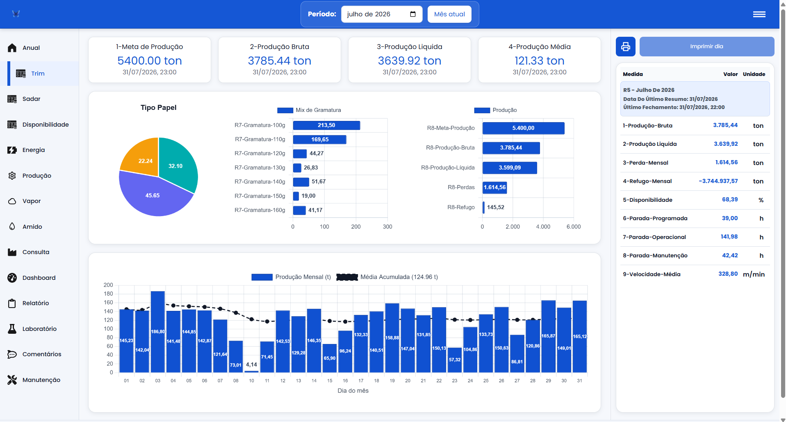
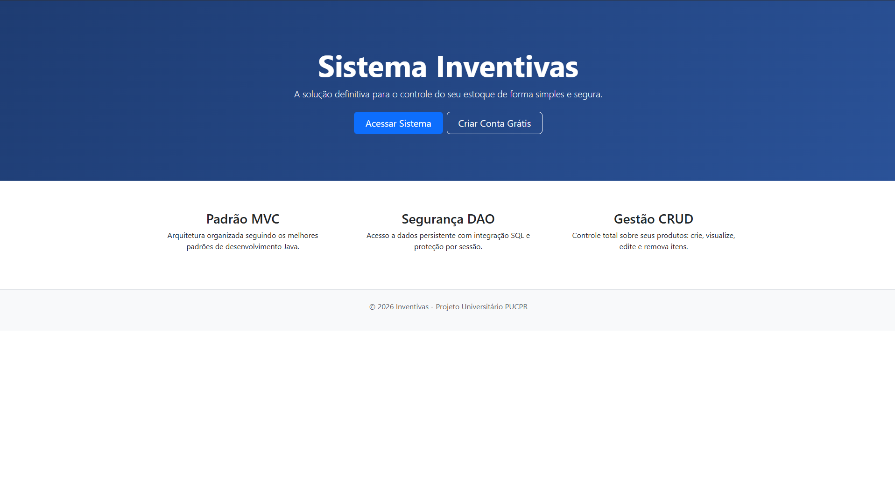

Olá, eu sou
Pedro Arthur Melo Rodrigues
Desenvolvimento de Software, Cibersegurança e Tecnologia
Estudante de tecnologia apaixonado por desenvolvimento, infraestrutura, segurança e criação de soluções.
Ver meus projetosSobre mim
Sou estudante da área de tecnologia com experiência em desenvolvimento de aplicações web, bancos de dados, containers Docker, automação e cibersegurança.
Busco constantemente desenvolver projetos que unam tecnologia, segurança e resolução de problemas reais.
Projetos em destaque

SADAR
Sistema para gerenciamento e visualização de dados industriais, relatórios e ordens de serviço.
PHP • MariaDB • Docker • Nginx • Node-RED

Inventivas
Aplicação desenvolvida com Java e Spring Boot para gerenciamento de produtos.
Java • Spring Boot • JPA • MariaDB
GameWorld
Aplicação web desenvolvida em PHP com banco de dados e ambiente Docker.
PHP • MariaDB • Docker • Composer
Outros Projetos
Linux em Rust
Projeto desenvolvido em Rust para explorar conceitos relacionados a diretórios, usuários, permissões e organização de arquivos.
Rust
Ver no GitHubBanco de Dados com SQLAlchemy
Aplicação desenvolvida em Python utilizando SQLAlchemy para modelagem, persistência e manipulação de dados, incluindo autenticação de usuários.
Python • SQLAlchemy • PyMySQL
Ver no GitHubAuChei
Projeto acadêmico voltado à criação de uma solução digital, envolvendo desenvolvimento, interface e aplicação de conceitos de produto.
Desenvolvimento Web • UX/UI
Ver no GitHubConversor HEIC para JPG
Utilitário desenvolvido em Python para converter imagens HEIC e HEIF para JPG em lote, mantendo os nomes originais e realizando todo o processamento localmente.
Python • Pillow • pillow-heif
Ver no GitHubTecnologias
Java • Python • PHP • Rust • JavaScript • SQL
Spring Boot • SQLAlchemy • MariaDB • MySQL
Docker • Git • GitHub • Linux • Node-RED
Contato
GitHub: github.com/pedroarthurmelo